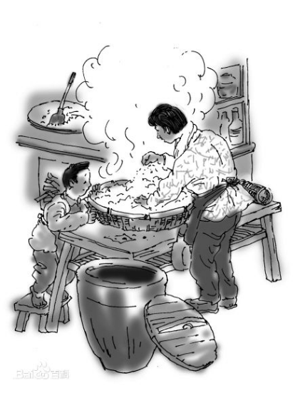
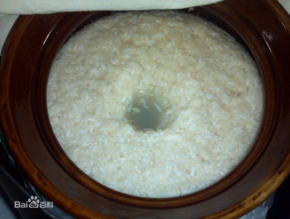
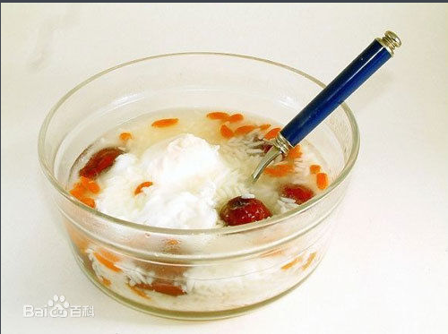
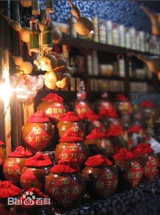
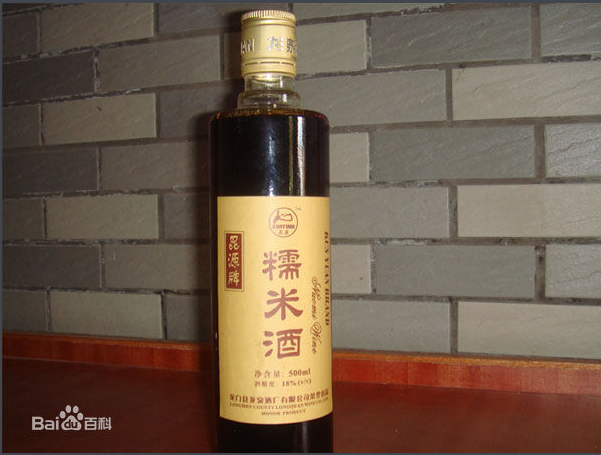

山兰糯米酒，又称酒酿、甜酒、醪糟，主要原料是山兰糯米，酿制独特，口味香甜醇美，乙醇含量极少，因此深受人们喜爱。在一些菜肴的制作上，山兰糯米酒还常被作为重要的调味料。山兰糯米酒色淡黄，所以又称“黄酒”。这种农家自酿的糯米酒，味醇而香甜，少刺激性；饮量适当，能舒筋活络、强壮体魄。农民逢年过节或招待宾客时，必用此酒。
它是用黎苗族所居山区一种旱糯稻——山兰稻米和黎山特有的植物，运用自然发酵的办法制成。
山兰酒传统的酿造方法颇为独特。制作时，将山兰米蒸熟揉散成粒，再把用黎山特定植物和米粉制成的“球饼”碾至粉状掺入其中，然后放置在垫满芭蕉叶的锥形竹筐内，上面也用芭蕉叶封盖。三天后，朝下的竹筐尖部开始往置于筐下的陶土罐子里滴出浆水，这就是山兰纯液，呈乳白色。待山兰纯液滴干后，竹筐内的酒渣还可再用黎族传统工艺进行酿造，酿造出来的酒就是山兰白酒。或者装进坛里。一日后取少量冷水沁入并封口，埋到芭蕉树下自然成酒，一年后酒呈黄褐色，数载则显红色甚至黑色。其时米、糟、叶无衡化为浆液。
逢贵客共临或重大节庆，一家开坛举寨飘香。由于酒与糟混在一起，为了不致喝进糟，便用竹竿插入坛，众客齐吸，古人有“竹竿一吸胜壶觞”的诗句。
山兰米含有极为丰富的营养，以这种稀有树叶制成的酒饼更含独特悠香。山兰酒除了清醇可口、味美甘甜以外，还有延年益寿、补气养颜和滋阴补阳的功效。消食去滞，数饮愈伤生肌，常饮驻颜长寿。黎家妇女生孩子之后，都要喝此酒用以滋补养身，去湿防病。近年，海南将科学方法与传统方法结合。
营养成分：山兰糯米中的淀粉转化成单糖和低聚糖，这更有利于它快速补充人体的能量，以及改变口味。主要的单糖和双糖有葡萄糖、果糖、麦芽糖、蔗糖、异麦芽糖。二、酸的分析：酸对于米酒的口味以及刺激消化液的分泌有很重要的作用，这些有机酸大部分是大米淀粉在发酵过程中由根酶发酵产生的。所含的有机酸主有乳酸、乙酸、柠檬酸等。三、蛋白质和氨基酸：大米中大部分的蛋白质是不溶于水的（谷蛋白、醇溶蛋白、清蛋白、球蛋白），经过发酵的过程有多少会被分解成为游离氨基酸和多肽类物质，这对于它的营养提高很有帮助。四、生素和矿物质：这些物质大部分都是大米中本身含有的，主要是他们的结合形式产生了变化，以及根酶在发酵时也会产生一些维生素。主要要有维生素B族，维生素E，多种矿物质。
中医：山兰糯米酒甘甜芳醇，能刺激消化腺地分泌，增进食欲，有助消化。山兰糯米经过酿制，营养成分更易于人体吸收，是中老年人、孕产妇和身体虚弱者补气养血之佳品。用糯米酒炖制肉类能使肉质更加细嫩，易于消化。糯米酒还有提神解乏、解渴消暑，促进血液循环、润肤的功效。对下列症状也有一定作用:面色不华、自汗；或平素体质虚弱、头晕眼眩、面色萎黄、少气乏力、中虚胃痛、便清等症。
西医：山兰糯米化学成分以及物理状态都发生了很大的变化。其中的淀粉转化为小分子的糖类，蛋白部分分解成氨基酸和肽，脂类的变化以及维生素和矿物资等结合状态的变化都为它的营养功能的提高产生了有效的促进作用。它的营养功能也正是基于这种化学和物理变化而产生的。而且，在发酵的过程中产生的一些风味物质对于它的口味也有很大的提高。
1、药用
山兰糯米酒有“百药之长”的美称，是医药上很重要的辅佐料或“药引子”。中药处方中常用糯米酒浸泡、烧煮、蒸灸某些中草药，或调制人参再造丸及各种药酒。糯米酒还具有药用价值和保健作用。冷喝有消食化积和镇静作用，对消化不良、厌食、心跳过速、烦躁等有疗效；烫热饮用能驱寒祛湿、活血化淤，对腰背酸痛、手足麻木和震颤，风湿性关节炎及跌打损伤等有益；如与鸡蛋、红糖同煮或冲服，则补中益气，强健筋骨，可防止神经衰弱，神思恍惚，头晕耳鸣，失眠、健忘等症；如分别与桂圆或荔枝、红枣、核桃、人参同煮，有助阳壮力、滋补气血之功效，对体质虚衰、元气降损、贫血等有疗效。米酒适合所有人食用。温中益气、补气养颜。中老年人、孕产妇和身体虚弱者更加适合。糯米酒酒精含量低，但“后劲”足，不可贪杯。在糯米酒中打个蛋花或加入适量红糖滋补效果更佳。口服。每次服50-100毫升，日服l-2次。阴虚火旺者忌服(引自《药酒汇编》)。
2、调料
糯米酒香味浓郁，富含氨基酸等呈味物质，在烹调荤菜时，加入少许，不仅可以去醒，而且可以增加鲜美的味。
适合所有人食用。温中益气、补气养颜。中老年人、孕产妇和身体虚弱者更加适合。、酒精含量低，但“后劲”足，不可贪杯。在山兰糯米酒中打个蛋花或加入适量红糖滋补效果更佳。口服。每次服50-100毫升，日服l-2次。阴虚火旺者忌服(引自《药酒汇编》)。
在烹调做饭时一般添加10～30毫克为佳。若直接饮用以每次大约200毫升为宜。中老年人、孕产妇和身体虚弱者更适宜饮用。此外，宜用糯米酒炖制肉类，能使肉质更加细嫩、易于消化。 饮用山兰糯米酒不可贪杯，否则也会醉倒，主要是因为它有十足的“后劲”。此外，山兰糯米酒不易久存，开瓶后最好10天内用完。
大多主要以米白色、黄色或褐红色（土埋越久颜色越陈）、清晰透明、香味浓馥、某美醇厚、风味独具。
土埋法：土埋树底恒温，6—24个月。 常温法：常温下不宜久存，3—20天；本产品不理过高温或低温下存放。
1.山兰糯米酒酒精含量低，但“后劲”足，不可贪杯。
2.孕妇不能直饮过多（最好煮沸后或煮鸡蛋吃法）。
3.如果发酵过度，糯米就空了，全是水，酒味过于浓烈。如果发酵不足，糯米有生米粒，硌牙。甜味不足，酒味也不足。
4.开瓶后的酒不能混有油、血等渣滓。
5.酒色发霉，发酸过度不能食用。
6.一定要密闭好。否则又酸又涩。
  

每坛两斤,100元/坛

每瓶一斤,200元/瓶
联系电话：13876280667 陈定龙（先生）
扫一扫或长按二维码图案，加我微信